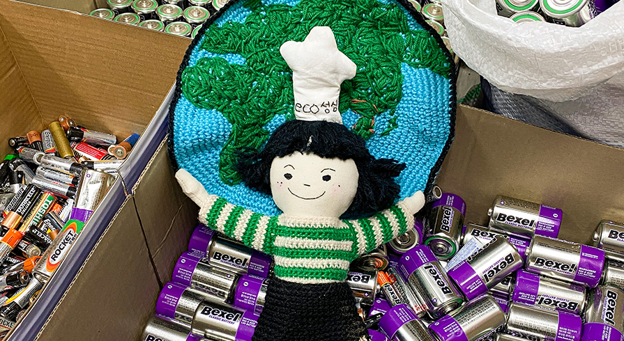

에코성심 프로젝트
시대적 징표에 응답하다 - 불편해도 환경, 귀찮아도 환경
2019년, 전 직원 대상으로 10회에 거쳐 에코 교육을 실시한 것을 시작으로 매월 신입사원 교육에서는
성심당 내에서 실천하고 있는 에코 프로젝트를 공유하고
우리가 왜 환경을 지켜야 하는지에 대해서 공감할 수 있도록 교육을 진행하고 있습니다.
-
01/에코교육
2019년, 전 직원 대상으로 10회에 거쳐 에코 교육을 실시한 것을 시작으로
매월 신입사원 교육에서는 성심당 내에서 실천하고 있는 에코 프로젝트를 공유하고
우리가 왜 환경을 지켜야 하는지에 대해서 공감할 수 있도록 교육을 진행하고 있습니다. -
02/에코혁신팀,
에코오지랖팀회사 내 에코혁신팀과 에코오지랖팀을 선발하여
지속적으로 에코성심 프로젝트를 이어갈 수 있도록 운영 관리하며,
매월 1회씩 모여 매장들의 분리수거 상태, 일회용품 사용량 등
에코 점수를 책정하고 피드백 하여 동기부여합니다. -

03/에코등급제
회사 내 에코혁신팀과 에코오지랖팀을 선발하여
지속적으로 에코성심 프로젝트를 이어갈 수 있도록 운영 관리하며,
매월 1회씩 모여 매장들의 분리수거 상태, 일회용품 사용량 등
에코 점수를 책정하고 피드백 하여 동기부여합니다. -
04/에코성심인
개인별 에코점수를 통해 인사고과에 반영하고 연말에는 에코챔피언을 선정하여 시상합니다.
-
05/에코챔피언 책 발행
지속적인 환경 실천을 위해 점검 항목을 설정해 놓고 점수를 부여하여
각 매장의 에코 등급을 책정합니다.
* 항목 : 에코성심인 배출 / 에코팀 참여도 / 분리수거 / 포장재 사용
/ 그린데이 참여 / 에코기사 작성 비율 -

06/그린데이
매월 15일, ‘그린데이’라는 타이틀로 직원들이 집에서 쓰지 않는 것들을 모아 나눕니다.
나무젓가락 등 일회용품은 인근 포장마차에 나누고,
일반 쓰레기로 버렸을 때 생태계의 교란, 수질과 토양 오염을 일으킬 수 있는 약, 건전지 등은
모아서 안전하게 폐기합니다. -
07/전 매장 물티슈 OUT
2019년, 성심당 보문산메아리 제품에 동봉되던 일회용칼과 물티슈를 뺀 이후로
성심당 전 매장에서는 물티슈를 사용하지 않고 있습니다. -
08/고객과 함께
개인별 에코점수를 통해 인사고과에 반영하고 연말에는 에코챔피언을 선정하여 시상합니다.
-
09/어린이 에코 워크숍
어린이들과 베이킹, 워크숍을 통해 ‘환경, 지구’에 대해서 생각해 보고
에코를 실천할 수 있는 교육 프로그램을 진행하고 있습니다. -
10/Re프로젝트
- 성심당문화원완벽하지 않더라도 가치 있는 ‘Eco-friendly’ 삶을 나누길 소망하며
2022년 5월, 폐 고시원을 리모델링한 ‘성심당 문화원’을 오픈하였습니다.
Reuse·Recycle·Reform 제품들을 소개하는 오밀조밀 모자이크 감성 상점으로
튀김소보로를 튀기고 남은 콩기름을 업사이클링 하여 만든 튀소비누,
폐 밀가루 포대로 만든 토트백, 폐 현수막으로 만든 파우치 등을 판매합니다. -
11/에코성심프로젝트
with 지역대학대학교와의 산학협력을 통해 학생들과 기업 내 환경적인 부분을
어떻게 개선하고 실천할 수 있을지 방법들을 논의하고 실제적인 제품을 개발하고 있습니다. -
12/세상과의 연대
- 우유팩분리배출 및 회수체계 시스템의 미확립으로 우유팩과 일반 파지가 혼입 배출,
고품질 재활용 소재로 활용 가능한 우유팩마저 소각 혹은 매립 처리되는 상황에
환경공단·지자체·타 제과 업체·교회·아파트와 협력하여
우유팩을 선별 수거하는 시스템을 구축하고
재활용률을 높이는데 노력하고 있습니다.